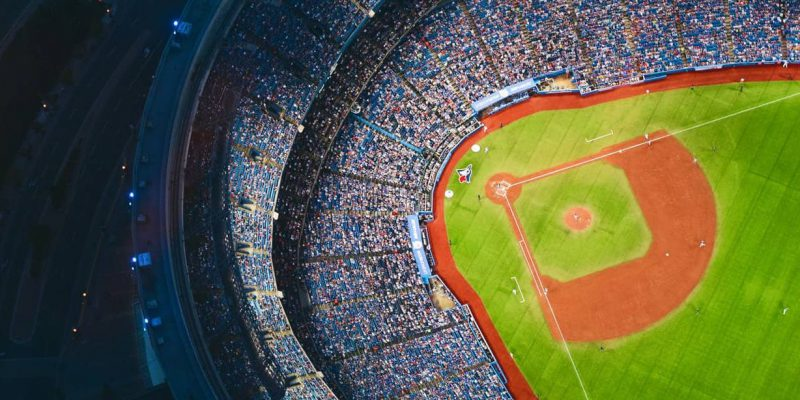

Qué son los deportes?
El deporte es una actividad física que realiza una persona o grupo siguiendo ciertas
reglas y dentro de un espacio físico determinado. Está generalmente asociado a las
competencias de carácter formal y sirve para mejorar la salud física y mental.
Es común confundir los términos deporte y actividad física o fitness. La diferencia
reside en el carácter competitivo del deporte; en el caso del fitness o de la actividad
física se realiza por satisfacción y recreo personal.
Tipos de deportes
- Deportes de combate. Disciplinas en las que dos contrincantes luchan cuerpo
a cuerpo apartir de ciertas reglas. Por ejemplo: Boxeo, Taekwondo, Esgrima,
Karate, Judo, Kick boxing, Lucha libre, Artes marciales mixtas y Jiu-jitsu.

- Deportes de pelota. Disciplinas en las que el elemento esencial es una pelota
y se juega de a grupos o individual. Por ejemplo: Fútbol, Rugby, Voleibol,
Baloncesto, Tenis, Paddle, Golf, Handball, Ping-Pong, Squash, Cricket, Hockey,
beísbol, billar y lacrosse.

- Deportes de atletismo. Disciplinas en las que los competidores se miden en pruebas
de fuerza, velocidad, lanzamiento y salto. Por ejemplo: Carrera, Salto con vallas,
Salto con garrocha, Salto en alto, Salto en largo, Lanzamiento de bala, Lanzamiento
de jabalina, Lanzamiento de disco y Lanzamiento de martillo.

- Deportes acuáticos. Se realizan sobre o en el agua. Por ejemplo: Natación, Surf, Remo,
Windsurf, Kitesurf, Vela, Buceo, Kayak, Waterpolo, Esquí acuático, Bodyboard y Rafting.

- Deportes de montaña. Se realizan en terrenos montañosos. Por ejemplo: Alpinismo,
Senderismo, Esquí, Snowboard, Ciclismo de montaña, Tirolesa y Escalada.

- Deportes de motor. Se realizan sobre un vehículo motorizado. Por ejemplo: Automovilismo
(formula 1, rally), Motociclismo (motociclismo de velocidad, motocross), Motonáutica, Aeronáutica.

- Deportes ecuestres. Se realizan sobre animales. Por ejemplo: turf, polo, pato, cross-country,
Equitación.